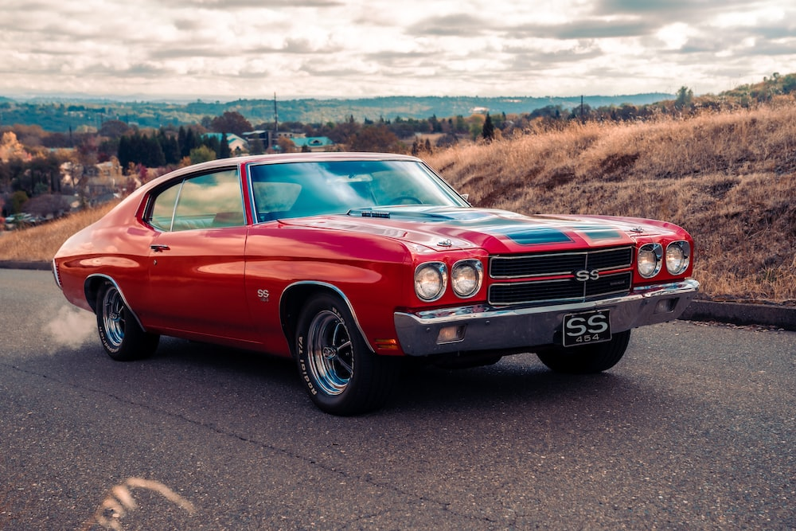
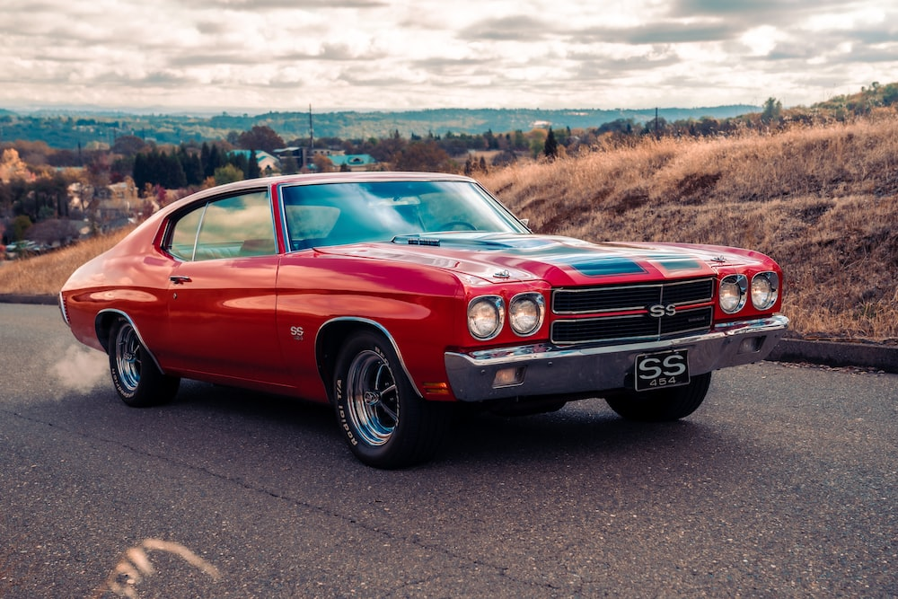

The Classics
- Browse collection
- Trade
- Register your classic
What we do
We host this platform for classic car enthusiasts to be able to ponder their favorite vehichles from every era. As well as register their own classic models so they may be auctioned or traded off. Click below to sign up now.

A taste of our collection
 



Why? Classic cars compete on a completely different level. It is not about efficiency and speed, but about the experience, style, exclusivity and craftsmanship, all of which are universal and timeless. Classic cars not only appeal to car lovers, but also to lovers of engineering, design, art and history.
-Ian Davies
Relive history at its finest!
By signing up, you will be receiving newsletters on the top rated classic vehicles of the month. As well as the catalogue of classic cars to buy and trade off.